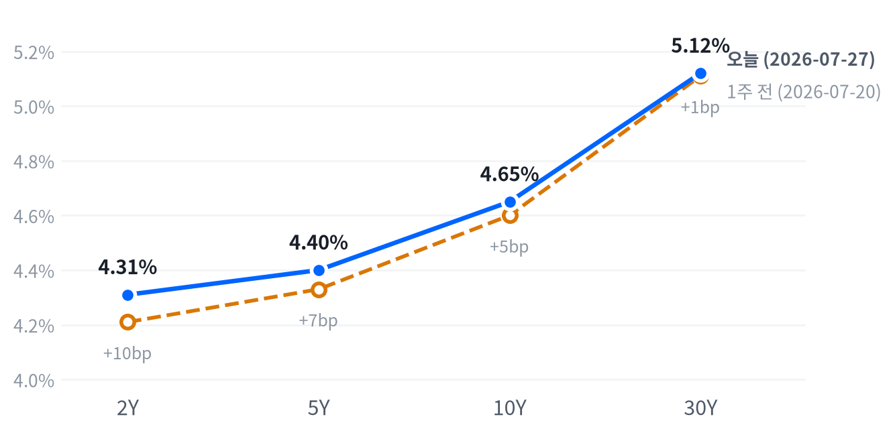

오늘 장을 관통한 동인은 서로 다른 층위에서 동시에 작동했다. 셔윈윌리엄스·코카콜라의 실적 서프라이즈와 가이던스 상향이 다우·밸류주를 밀어올렸고, 여기에 유가 하락(WTI -1.25%, Brent -2.14%)에 따른 인플레이션 부담 완화가 더해지며 다우는 3거래일 연속 상승했다.
반대편에서는 중국이 자체 개발한 DUV 리소그래피 장비를 SMIC·CXMT 라인에 투입하기 시작했다는 보도와 창신메모리(CXMT)의 상하이 상장(약 86억달러 조달)이 겹치며 메모리·반도체 밸류체인 전반이 급락(마이크론 -8.85%, 삼성전자 -13.39%, SK하이닉스 -14.65%)해 나스닥을 끌어내렸다.
크로스에셋 흐름은 대체로 정합적이면서도 몇 가지 예외를 남겼다. 유가 급락은 국채금리에서도 확인되는데, 야후 기준 07-28 스팟금리(10Y 4.60%)가 FRED 07-27 종가(4.65%)보다 낮게 형성돼 인플레이션 우려 완화와 방향이 일치한다. 다만 원화는 삼성전자·SK하이닉스가 두 자릿수 급락한 날임에도 달러 대비 오히려 소폭 강세(USD/KRW -0.29%)를 보였고, 금(-1.34%)도 안전자산 수요보다는 금리·달러 동학에 더 크게 반응해 위험회피 신호로 보기 어려운 하루였다.
다음 촉매는 두 갈래로 갈린다. 7/29(수) 오후 2시 ET FOMC 결과 발표가 첫 변수이고(이번 회의는 점도표 미공개), CME FedWatch 프라이싱이 매체마다 엇갈리는 만큼(하단 경제지표 대시보드 참조) 실제 코멘터리 방향에 시장이 예민하게 반응할 소지가 크다. 두 번째 변수는 중국발 메모리 경쟁 우려가 실제 양산 스케일업으로 이어지는지이며, 7/31 전후 발표 예정인 6월 PCE 물가지표도 인플레이션 경로를 가늠할 다음 확인 지점이다.
| 지수 | 종가 | 등락 | 등락률 |
|---|---|---|---|
| Dow | 52,747.32 | +537.24 | +1.03% |
| S&P 500 Value | 234.42 | +2.03 | +0.87% |
| S&P 500 | 7,428.78 | +15.60 | +0.21% |
| Russell 2000 | 2,953.80 | +5.76 | +0.20% |
| Nasdaq | 24,876.91 | -55.17 | -0.22% |
| S&P 500 Growth | 131.83 | -0.50 | -0.38% |
| 섹터 | 종가 | 등락 | 등락률 |
|---|---|---|---|
| Health Care | 167.26 | +3.86 | +2.36% |
| Consumer Staples | 87.06 | +1.70 | +1.99% |
| Comm. Services | 109.67 | +2.01 | +1.87% |
| Materials | 52.34 | +0.95 | +1.85% |
| Consumer Disc. | 112.48 | +1.64 | +1.48% |
| Financials | 57.60 | +0.72 | +1.27% |
| Real Estate | 46.01 | +0.25 | +0.55% |
| Utilities | 45.52 | -0.16 | -0.35% |
| Industrials | 182.49 | -0.71 | -0.39% |
| Energy | 57.57 | -0.79 | -1.35% |
| Technology | 171.09 | -3.21 | -1.84% |
나스닥은 개장가(24,828.04) 대비 10:00에 장중 저점(24,582.06, -0.99%)까지 밀렸다. 마이크론·웨스턴디지털·시게이트 등 메모리주와 반도체 전반이 중국의 자체 DUV 리소그래피 가동 소식에 급락하며 지수를 짓눌렀기 때문이다(Yahoo Finance, TheStreet 종합 보도). 이후 정오 12:30에는 개장가 대비 +0.63%까지 반등했으나 오후 들어 다시 밀려 전일比 -0.22%로 마감했다.
S&P500은 09:30에 이미 장중 저점(7,382.95, 개장가 대비 -0.17%)을 형성해 나스닥보다 이른 시점에, 훨씬 얕은 낙폭으로 저점을 찍었다. 이후 꾸준히 오르며 12:30 고점(7,452.09, +0.76%)까지 도달했다가 소폭 되돌려 +0.21% 상승 마감했다. 러셀2000은 10:30에 저점(2,923.27, -0.85%)을 찍은 뒤 완만하게 우상향해 종가 직전인 15:30에 장중 고점(2,955.39, +0.24%)을 형성하며 +0.20%로 마쳤다 — 마감 무렵까지 매수세가 이어진 유일한 지수다.
개별 종목 단에서는 엔비디아가 10:00에 저점(192.74달러, 개장가 대비 -1.13%)을 찍었는데, 이는 나스닥 저점과 같은 시각으로 반도체 로테이션이 지수 전체를 끌어내린 시점과 정확히 겹친다. 이후 정오 12:00 고점(198.70달러, +1.92%)까지 큰 폭 반등했다가 되돌려 전일比로는 +0.25% 강보합에 그쳤다 — 장중 변동폭에 비해 종가 등락률은 작았던 셈이다.
지수 간 궤적 차이는 결국 종목 구성에서 갈렸다. 반도체·메모리 비중이 큰 나스닥은 오전 내내 짓눌린 반면, 다우는 셔윈윌리엄스(2분기 조정EPS 3.70달러, 예상 3.52달러 상회하고 가이던스 상향)와 코카콜라(조정EPS 97센트, 예상 93센트 상회, 사상 최고가)의 실적 서프라이즈에 힘입어 장중 한때 +659포인트(+1.3%)까지 올랐다가 종가는 +537포인트(+1.03%)로 마감했다(Yahoo Finance/qz.com, FX Leaders 종합 보도). 다우가 상승한 사흘째 거래일이라는 점도 눈에 띈다.
밸류(S&P500 Value +0.87%)와 성장(S&P500 Growth -0.38%)의 등락률 격차가 1.25%포인트에 달해 오늘 장의 스타일 로테이션을 뚜렷하게 드러냈다. 셔윈윌리엄스·코카콜라 등 우량 배당주의 실적 호조와 유가 하락에 따른 인플레이션 부담 완화가 밸류·경기민감 성격의 종목을 밀어올렸다.
섹터별로는 헬스케어(+2.36%)·필수소비재(+1.99%)·커뮤니케이션서비스(+1.87%)가 상위권을 차지했고, 기술(-1.84%)이 유일하게 1%대 후반 하락한 섹터로 남았다. 반도체·메모리주의 급락이 기술 섹터 전체를 끌어내렸지만 낙폭은 개별 종목(마이크론 -8.85%, SK하이닉스 -14.65%)에 비해 섹터 지수 자체는 상대적으로 완만했다.
포지셔닝 관점에서는 중국 CXMT발 메모리 경쟁 우려가 하루짜리 반응인지 밸류체인 재평가의 시작인지가 다음 확인 트리거다. 7/29 FOMC 결과와 이번 주 이어질 반도체·메모리 관련 뉴스 흐름을 지켜보며 성장주 익스포저를 단계적으로 재조정하는 편이 합리적이다.
| 만기 | 07-27 종가(FRED) | 전일比(bp) | 1주 전(07-20) | 주간 변화(bp) |
|---|---|---|---|---|
| 2Y | 4.31% | -2bp | 4.21% | +10bp |
| 5Y | 4.40% | -3bp | 4.33% | +7bp |
| 10Y | 4.65% | -4bp | 4.60% | +5bp |
| 30Y | 5.12% | -4bp | 5.11% | +1bp |

2Y·5Y·10Y·30Y 국채금리(FRED, 2026-07-27 기준) — 1주 전(2026-07-20) 대비 전 구간 상승, 2Y가 +10bp로 가장 크게 올라 10Y(+5bp)·30Y(+1bp)를 앞질러 완만한 베어 플래트닝.
2s10s 스프레드는 오늘(FRED 07-27 기준) 34bp로 1주 전(07-20) 39bp에서 5bp 줄었다. 2Y가 +10bp, 5Y가 +7bp 오른 반면 10Y는 +5bp, 30Y는 +1bp에 그쳐 단기물이 장기물보다 더 크게 상승하는 베어 플래트닝이 한 주간 이어졌다. 10년물은 3월 중동 전쟁 발발 직전(2/27) 저점 3.960%에서 큰 폭 올라 2025년 초 이후 최고 수준 근방에 머물고 있다.
일간으로는 방향이 반대로 나타난다. 2Y -2bp, 5Y -3bp, 10Y -4bp, 30Y -4bp로 전 구간이 소폭 내렸는데 장기물의 하락폭이 단기물보다 커 완만한 불 플래트닝이 하루 동안 나타났다. 자체 데이터의 당일(07-28) 야후 스팟금리(5Y 4.36%, 10Y 4.60%, 30Y 5.10%)도 FRED 07-27 종가보다 낮게 형성돼, 이날 유가 급락이 채권시장에서도 금리 상승 압력을 눌러준 정황이 확인된다(다만 FRED 확정치가 아닌 참고용 수치).
포지셔닝 관점에서는 주간 단위 베어 플래트닝이 유지되는 만큼 단기물 중심의 숏 듀레이션 기조를 7/29 FOMC 전까지 가져가는 편이 합리적이다. 동결이 확인되고 유가 하락이 굳어지면 장기물 비중을 확대할 확인 트리거로 삼을 수 있고, 반대로 10Y가 재차 4.70% 위로 올라서면 인상 베팅 재점화 신호로 보고 듀레이션을 더 줄이는 손절 기준으로 삼을 만하다.
| 통화쌍 | 종가 | 등락 | 등락률 |
|---|---|---|---|
| DXY | 101.39 | -0.08 | -0.08% |
| USD/KRW | 1,453.82 | -4.19 | -0.29% |
| USD/JPY | 163.85 | +0.24 | +0.15% |
| EUR/USD | 1.1388 | -0.0007 | -0.06% |
USD/JPY는 개장가(163.74) 대비 11:30에 고점(163.95, +0.13%)을 찍은 뒤 16:00에는 저점(163.64, -0.06%)까지 되돌렸고, 종가는 163.85(+0.15%)로 좁은 박스권에서 하루를 마쳤다.
DXY(-0.08%)는 소폭 약세를 보였는데, 다우 강세로 대표되는 위험선호 심리와 메모리·반도체 급락에 따른 안전자산 수요가 서로 상쇄되며 좁은 범위에 머물렀다. USD/KRW(-0.29%, 원화 강세)는 삼성전자·SK하이닉스가 두 자릿수 급락한 날임에도 오히려 달러 대비 소폭 강세를 보여 국내 증시와 원화의 방향이 어긋난 하루였다. EUR/USD(-0.06%)는 거의 보합권에 머물렀다.
| 품목 | 종가 | 등락 | 등락률 |
|---|---|---|---|
| Natural Gas | $2.683 | -0.084 | -3.04% |
| Brent | $86.47 | -1.89 | -2.14% |
| Gold | $4,020.00 | -54.50 | -1.34% |
| WTI | $81.58 | -1.03 | -1.25% |
최대 변동 품목은 천연가스(-3.04%)이나, 장중 변동폭이 가장 컸던 품목은 WTI다. WTI는 새벽 02:30에 장중 고점(82.61달러, 개장가 대비 +1.26%)을 찍은 뒤 정오 12:30에는 저점(77.78달러, -4.66%)까지 급락했다가 낙폭 대부분을 되돌려 종가는 81.58달러(전일比 -1.25%)로 마감했다 — 하루 동안 거의 6%포인트에 달하는 고점·저점 스윙이 나타난 셈이다.
미국의 이란 공습 중단과 이란의 보복 중단 발표에 이어 호르무즈 해협을 둘러싼 이란-사우디-오만 간 논의가 이어졌다는 보도가 이 변동성의 배경으로 지목된다(vantagemarkets.com, CNBC).
금은 개장가(4,049.00달러) 자체가 전일 종가보다 낮은 갭다운으로 출발했다. 새벽 04:00에 고점(4,055.60달러, 개장가 대비 +0.16%)을 찍은 뒤 10:00에 저점(4,011.10달러, -0.94%)까지 밀렸고, 종가는 4,019.90달러 부근에서 형성돼 전일比 -1.34% 하락 마감했다. 유가 급락에 따른 인플레이션 기대 완화가 금리 상승 압력을 키우며 금 매수세를 눌렀을 가능성이 있다.
브렌트(-2.14%)도 WTI와 같은 방향으로 하락했고, 천연가스(-3.04%)는 넷 중 가장 큰 낙폭을 기록했다. 다음 며칠간 이란-미국·호르무즈 관련 협상의 실제 진전 여부에 따라 에너지 전반의 변동성이 다시 커질 수 있다.
| 자산군 | 판단 | 근거 |
|---|---|---|
| 주식 | 선별적 비중조정 | 실적 서프라이즈를 낸 우량 밸류주(셔윈윌리엄스·코카콜라형)와 방어 섹터 비중 확대, 메모리·AI인프라 등 고밸류 성장주는 안정 신호 확인 전까지 비중 축소 |
| 채권 | 단기물 숏 듀레이션 | 주간 베어 플래트닝(2Y +10bp > 5Y +7bp > 10Y +5bp > 30Y +1bp)이 유지되는 한 단기물 중심 포지션 유지, FOMC 결과 확인 후 장기물 비중 확대 검토 |
| FX | 중립·관망 | DXY는 보합권이나 원화는 한국 반도체 급락에도 강세를 보여 방향성이 엇갈림, FOMC 전까지 방향성 베팅보다 관망이 유효 |
| 원자재 | 변동성 확대 유의 | WTI가 하루 동안 개장가 대비 +1.26%~-4.66%의 큰 스윙을 보인 만큼 호르무즈·이란 뉴스 흐름에 따라 롱·숏 모두 트레일링 손절선 사전 설정 필요 |
| 메모리 | 저점매수 신중 | CXMT의 DUV 기반 양산 우려가 근원이나 D램 수요·AI 투자 확대라는 구조적 스토리 자체는 아직 유효, 낙폭이 상대적으로 작은 종목부터 단계적 접근 |
| AI 인프라 | 종목 선별 필요 | 광통신(코히런트·루멘텀) 낙폭이 반도체(마벨)·전력인프라(GE 버노바·버티브)보다 훨씬 커 밸류에이션 조정 폭이 상이, 마벨 CEO의 수주 호조 코멘트가 주가에 반영되지 않은 점도 주목 |
FOMC 매파 서프라이즈: 신규실업수당청구(187K, 1969년 이후 최저권)와 PMI 서프라이즈를 근거로 7/29 FOMC에서 예상 밖 매파적 언급이 나오면 단기물 금리가 추가로 오르며 밸류 로테이션이 되돌려질 수 있다.
중국 메모리 경쟁의 구조화: CXMT의 DUV 기반 양산이 실제 스케일업으로 확인되면 삼성전자·SK하이닉스·마이크론의 조정이 하루짜리 반응을 넘어 밸류체인 전반의 구조적 재평가로 번질 수 있다.
호르무즈 리스크 재점화: WTI가 하루 동안 6%포인트에 가까운 스윙을 보인 만큼 이란-미국·이란-사우디 협상이 결렬되면 유가가 재급등하며 오늘 형성된 인플레이션 완화 기대가 순식간에 뒤집힐 수 있다.
메모리 섹터 (SK하이닉스 -14.65%, 삼성전자 -13.39%, 마이크론 -8.85%) — 중국의 자체 DUV 리소그래피 가동과 창신메모리(CXMT)의 상하이 상장(약 86억달러 조달)이 겹치며 급락했다. 삼성전자는 거의 20년 만의 최대 하루 낙폭을 기록했고, HBM 핵심 공급사인 SK하이닉스는 AI 인프라 자금조달 우려까지 더해지며 낙폭이 가장 컸다(Yahoo Finance, CNBC, Investing.com/Reuters 종합 보도).
AI 인프라·광학 섹터 (코히런트 -10.31%, 루멘텀 -8.43%, 마벨 -7.77%) — 하이퍼스케일러 AI 캐펙스의 지속가능성에 대한 투자자 회의론과 대형 랠리 이후의 차익실현이 겹쳤다. 마벨은 CEO가 탁월한 AI 수주와 상향된 매출 전망을 언급했음에도 광학주와 동반 약세를 보였다.
실적발 밸류 로테이션 (다우 +1.03%, 셔윈윌리엄스·코카콜라 실적 서프라이즈) — 두 종목 모두 컨센서스를 웃도는 실적과 가이던스 상향을 내놓으며 다우를 3거래일 연속 상승으로 이끌었고, 유가 하락과 맞물려 밸류·방어 섹터 전반이 동반 강세를 보였다.
| 종목 | 종가 | 등락 | 등락률 |
|---|---|---|---|
| Micron | $820.53 | -79.67 | -8.85% |
| Western Digital | $463.51 | -34.41 | -6.91% |
| Seagate | $747.30 | -69.69 | -8.53% |
| Nvidia | $197.01 | +0.50 | +0.25% |
| Samsung Elec | ₩220,000 | -34,000 | -13.39% |
| SK hynix | ₩1,550,000 | -266,000 | -14.65% |
중국이 자체 개발한 DUV(심자외선) 이머전 리소그래피 장비를 SMIC·CXMT 라인에 투입하기 시작했다는 보도가 나오며, 서방 수출 규제에도 불구하고 중국 반도체 업체들이 첨단 공정 능력을 확보할 수 있다는 우려가 확산됐다(techtimes.com). 여기에 중국 최대 D램 업체 창신메모리(CXMT)가 7/27 상하이 STAR마켓에 상장해 약 86억달러를 조달한 사실이 겹치며 메모리 공급과잉 우려를 자극했다(Yahoo Finance).
삼성전자(-13.39%)는 거의 20년 만의 최대 하루 낙폭을 기록했고 SK하이닉스(-14.65%)는 이보다도 낙폭이 컸는데, 두 회사 합산 시가총액이 약 2,700억달러 증발했다고 보도된다. 두 종목이 코스피 시가총액의 절반 가까이를 차지해 코스피지수 자체가 -10.8%로 급락하며 2026년 3월 미·이란 충돌 초기 이후 최대 하루 낙폭을 기록했다(Yahoo Finance, CNBC).
로이터발 기사는 이 매도세를 AI 인프라 자금조달(엔비디아向) 우려와 중국 경쟁 심화가 겹친 결과로 설명하며, SK하이닉스가 엔비디아向 HBM 핵심 공급사여서 AI 투자심리 변화에 특히 민감하다는 점을 지적했다(Investing.com/Reuters).
미국 상장 종목 중에서는 마이크론(-8.85%)·시게이트(-8.53%)가 8%대, 웨스턴디지털(-6.91%)이 그보다 낮은 낙폭을 기록했다. UBS의 Mark Haefele는 이번 주 반도체 약세를 하이퍼스케일러 실적 발표를 앞둔 취약한 투자심리, CXMT 경쟁 우려, 과열된 AI 트레이드에서의 로테이션이 겹친 결과로 짚었다. 한 달 기준으로는 마이크론 -20%, 웨스턴디지털 -15.1%로, 절대적 실적 훼손이라기보다는 2026년 급등분 내에서의 되돌림 성격이 강하다는 평가도 함께 나온다(FinancialContent/stockstory, Yahoo Finance).
단기 변동성이 극심한 국면이지만 D램 수요·AI 투자 확대라는 구조적 스토리 자체가 훼손됐다고 단정하기는 이르다. 낙폭이 상대적으로 작은 종목부터 단계적으로 저점 매수를 검토하되, CXMT의 실제 양산 스케일업 여부와 이번 주 이어질 관련 뉴스 흐름을 먼저 확인하는 편이 합리적이다.
| 종목 | 분야 | 종가 | 등락 | 등락률 |
|---|---|---|---|---|
| Marvell | 반도체/데이터센터 커넥티비티 | $174.47 | -14.70 | -7.77% |
| Coherent | 광통신 부품 | $243.33 | -27.98 | -10.31% |
| Lumentum | 광통신 부품 | $651.93 | -60.03 | -8.43% |
| GE Vernova | 전력 인프라/터빈 | $943.38 | -53.19 | -5.34% |
| Vertiv | 데이터센터 냉각/전력관리 | $269.56 | -18.04 | -6.27% |
코히런트(-10.31%)·루멘텀(-8.43%) 등 광학/커넥티비티주가 마벨(-7.77%)보다 큰 낙폭을 기록하며 AI 데이터센터 옵틱스 밸류체인 전반이 흔들렸다. 트레이더들이 AI 투자 랠리의 지속가능성에 의문을 제기하고 있다는 평가이며, 두 종목 모두 연초 대비로는 여전히 큰 폭 상승한 상태에서 나온 차익실현 성격이 강하다(24/7 Wall St.).
마벨은 CEO 매트 머피가 탁월한 AI 관련 수주를 언급하며 회계연도 2027·2028년 매출 전망을 상향했음에도 주가는 광학주들과 동반 약세를 보였다. 최근 애널리스트 다운그레이드와 반도체 섹터 전반의 약세가 개별 호재를 압도한 결과로 풀이된다(TIKR.com, Investing.com).
GE 버노바(-5.34%)·버티브(-6.27%) 등 데이터센터 전력·냉각 인프라주도 동반 하락했지만 낙폭은 광학주 그룹보다 작았다. 두 종목에 대한 당일 개별 촉매 뉴스는 확인되지 않으며, 광학·반도체와 같은 AI 캐펙스 재평가 로테이션에 동반된 것으로 보이나 이는 정황적 추정임을 밝혀둔다.
투자 관점에서는 AI 데이터센터 전력·냉각·광통신 밸류체인의 장기 성장 스토리 자체는 유효하나, 종목별 낙폭 편차가 큰 국면인 만큼 수주잔고·가이던스 추세가 뒷받침되는 종목을 선별할 필요가 있다.
| 지표 | Actual | Forecast | Previous | 발표일/기준 | 판정 |
|---|---|---|---|---|---|
| Initial Jobless Claims (07-18주) | 187K | 211K~212K | 209K | 2026-07-23 | 하회▼ |
| Initial Claims 4주 이동평균 | 207.5K | — | 214.75K | 기준: 2026-07-18주 | — |
| Continuing Jobless Claims | 1,796K | — | 1,798K | 기준: 2026-07-11주 | — |
| JOLTS 구인건수 | 7,594K | — | 7,585K | 기준월: 2026-05 | — |
| Nonfarm Payrolls (전월비) | +57K | — | +129K | 기준월: 2026-06 | — |
| 실업률 | 4.2% | — | 4.3% | 기준월: 2026-06 | — |
| 시간당 평균임금 MoM | +0.35% | — | +0.27% | 기준월: 2026-06 | — |
| ADP 주간 고용 펄스 | 주간평균 +15,000명(4주평균, 7/11마감) | — | 5주 연속 둔화(전주比) | 2026-07-28 | — |
| 지표 | Actual | Forecast | Previous | 발표일/기준 | 판정 |
|---|---|---|---|---|---|
| S&P Global 플래시 제조업PMI | 53.8 | 54.3 | 53.9(6월) | 2026-07-24 | 하회▼ |
| S&P Global 플래시 서비스업PMI | 53.6 | 51.5 | 51.2(6월) | 2026-07-24 | 상회▲ |
| S&P Global 플래시 종합PMI | 53.6 | 52.2 | 51.9(6월) | 2026-07-24 | 상회▲ |
| 산업생산 MoM | +0.08% | — | +0.14% | 기준월: 2026-06 | — |
| 내구재수주 MoM | +0.32% | — | -4.04% | 기준월: 2026-06 | — |
| 신규주택판매 | 628K | — | 618K | 기준월: 2026-06 | — |
| 기존주택판매 | 4.09M | — | 4.19M | 기준월: 2026-06 | — |
| 실질GDP 성장률 (연율, QoQ) | +2.1% | — | +0.5% | 기준분기: 2026 Q1(확정치) | — |
| 지표 | Actual | Forecast | Previous | 발표일/기준 | 판정 |
|---|---|---|---|---|---|
| CB 소비자신뢰지수 | 90.8 | 92.3 | 92.2(상향수정) | 2026-07-28 | 하회▼ |
| 소매판매 MoM | +0.22% | — | +1.02% | 기준월: 2026-06 | — |
| 미시간대 소비자심리지수 | 44.8 | — | 49.8 | 기준월: 2026-05 | — |
| 지표 | Actual | Forecast | Previous | 발표일/기준 | 판정 |
|---|---|---|---|---|---|
| CPI YoY | 3.73% | — | 4.27% | 기준월: 2026-06 | — |
| CPI MoM | -0.42% | — | +0.47% | 기준월: 2026-06 | — |
| Core CPI YoY | 2.81% | — | 2.96% | 기준월: 2026-06 | — |
| Core CPI MoM | -0.02% | — | +0.21% | 기준월: 2026-06 | — |
| PPI 최종수요 MoM | -0.28% | — | +0.62% | 기준월: 2026-06 | — |
| PCE 물가지수 YoY | 4.07% | — | 3.80% | 기준월: 2026-05 | — |
| Core PCE YoY | 3.41% | — | 3.32% | 기준월: 2026-05 | — |
| 미시간대 1년 기대인플레 | 4.8% | — | 4.7% | 기준월: 2026-05 | — |
노동시장 서프라이즈(신규실업수당청구 187K, 컨센서스 211~212K를 크게 밑돌며 1969년 이후 최저권)와 PMI 서프라이즈(서비스·종합 8개월래 최고)가 동시에 나오며 경기는 견조하나 인플레 재점화 우려도 동반된다는 시각이 확산됐다. 반면 CB 소비자신뢰지수(90.8)는 컨센서스(92.3)를 밑돌며 3개월 연속 하락해, 서베이 지표와 하드데이터 사이의 괴리가 뚜렷했다.
CME FedWatch 프라이싱은 매체마다 다른 각도로 보도된다. 일부 매체는 7/29 FOMC에서 정책금리 동결 확률을 약 65.7%, 25bp 인상 확률을 약 35%로 집계했고, 다른 매체는 같은 시점 데이터를 두고 9월 회의에서 25bp 인하 가능성이 약 80% 반영됐다고 보도했다 — 인상과 인하라는 정반대 프레임이 동시에 유통되는 셈이다. 이번 회의는 점도표(SEP)가 공개되지 않는 회의여서, 7/29 오후 2시 ET 성명과 2시30분 기자회견의 실제 문구가 나오기 전까지는 어느 프라이싱이 컨센서스를 정확히 반영하는지 가늠하기 어렵다.
채권시장은 이미 주간 단위로 베어 플래트닝(2Y +10bp, 10Y +5bp)을 가격에 반영해 다소 매파적인 방향을 선반영했지만, 07-28 당일 유가 급락과 함께 야후 스팟금리(10Y 4.60%)가 FRED 종가(4.65%)보다 낮아지며 되돌림 조짐도 함께 나타났다. 주식시장은 다우가 실적·유가 호재에 반응한 반면 나스닥은 메모리·반도체 개별 악재에 더 민감하게 반응해, 매크로 지표보다 개별 이벤트가 오늘 하루의 방향성을 더 크게 좌우했다.
심리(선행)축은 엇갈렸다. 신규실업수당청구와 S&P Global 서비스·종합 PMI는 컨센서스를 웃돌며 개선 신호를 냈지만, 제조업 PMI(53.8, 예상 54.3)와 CB 소비자신뢰지수(90.8, 예상 92.3, 3개월 연속 하락)는 예상을 밑돌아 방향이 갈렸다. 서베이 지표 내에서도 고용 관련 서베이(claims)는 강한 반면 소비 심리 서베이(CB confidence)는 약해, 선행축 내부에서 정합성이 낮았다.
활동(중행)축도 혼조다. 신규주택판매(628K, 전월 618K)는 늘었지만 기존주택판매(4.09M, 전월 4.19M)는 줄었고, 산업생산(+0.08%, 전월 +0.14%)도 둔화됐다. 다만 내구재수주는 +0.32%로 전월의 큰 폭 감소(-4.04%)에서 반등했고, 2026년 1분기 실질GDP는 +2.1%로 직전 분기(+0.5%)보다 크게 개선돼, 분기 단위 활동은 개선됐으나 최근 월간 지표는 다소 식어가는 모습이다.
성적표(후행)축은 엇갈림이 가장 뚜렷했다. 6월 비농업고용은 +57K로 전월(+129K) 대비 크게 둔화됐지만 실업률은 4.2%로 소폭 개선됐고, CPI·Core CPI는 6월 기준 전월보다 냉각된 반면 PCE·Core PCE YoY(5월 기준, 각 4.07%·3.41%)는 오히려 전월(3.80%·3.32%)보다 높아져 물가지표 시리즈 간 방향이 갈렸다. 선행축의 강한 claims·PMI 신호와 후행축의 고용 둔화·PCE 상승이 서로 다른 방향을 가리켜, 축 간 정합성이 낮은 국면이 이어지고 있다.
기본 시나리오는 노동시장이 표면적 견조함(낮은 실업수당청구, 강한 서비스·종합 PMI)을 유지하는 가운데 유가발 공급충격이 일시적으로만 물가에 반영되는 경로다. 6월 CPI YoY가 이미 3.73%까지 낮아졌고 오늘 유가마저 하락 반전한 만큼, 연준이 7/29 FOMC에서 정책금리를 동결할 가능성이 우세하다.
대안 시나리오는 CB 소비자신뢰지수 하락과 PCE·Core PCE YoY의 재상승(각 4.07%·3.41%)이 시사하듯 물가 압력이 예상보다 끈적하게 남아, 미시간대 1년 기대인플레이션(4.8%, 전월 4.7%)의 추가 상승으로 이어지는 경로다. 이 경우 CME FedWatch가 일부 반영하는 인상 베팅이 힘을 받으며 장기물 금리 상승 압력이 재개될 수 있다.
시나리오를 가를 핵심 일정은 7/29 FOMC 결정과 기자회견, 7/31 전후 발표 예정인 6월 PCE 물가지표, 그리고 8/1 ISM 제조업 지수다. 자산배분 관점에서는 두 시나리오 모두에서 방어·밸류 섹터 비중을 유지하되, 장기 듀레이션 채권과 메모리·AI인프라 등 고밸류 성장주는 FOMC 결과가 확인될 때까지 보수적으로 접근하는 편이 합리적이다.